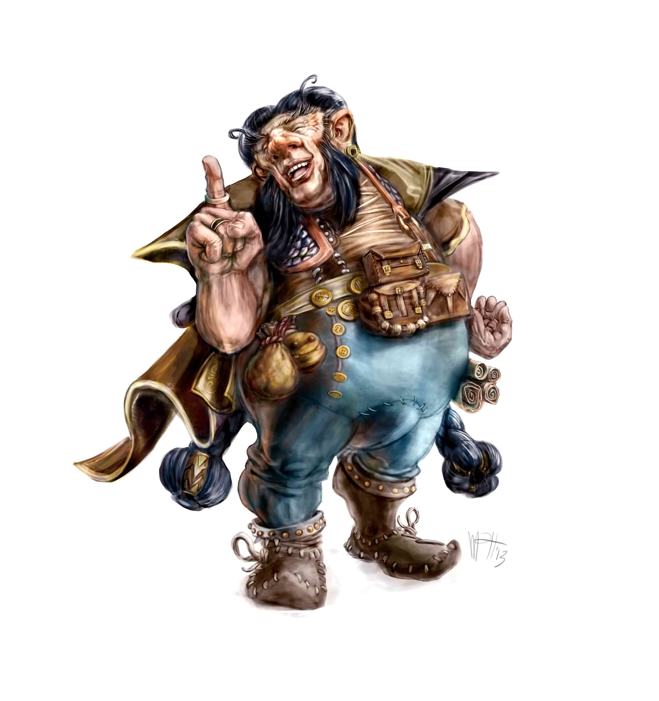

Glamordir delle Montagne è il Drago Patrono dei sei clan dei nani.
Ogni clan fu forgiato da un diverso metallo: oro, ferro, mercurio, rame, argento e zolfo.
La carnemetallo: ogni nano ha una parte del corpo composta di questo materiale, dalla consistenza e la mobilità della carne, ma dall’aspetto del metallo del clan d’appartenenza. Per il resto i nani sono robusti e di bassa statura, essendo alti di solito non più di un 1,65 metri. Il volto è caratterizzato da un naso dalle larghe froge e da labbra carnose, con una fronte prominente. I peli corporei sono abbondanti, e grande attenzione è data alla cura di capigliatura, barba e baffi. I nani vivono in media fino a 130 anni.
nani del ferro
I nani del ferro sono freddi come il loro metallo. Il ferro è però associato anche al sangue e questi nani, oltre a tenere in gran considerazione i legami familiari, sono capaci di violentissime esplosioni di rabbia. La loro furia non è però selvaggia ma metodica, tesa a eliminare subito il problema che l’ha causata. Essa si placherà appena raggiunto questo obiettivo.
nani d’oro
I nani d’oro sono carismatici, generosi, traditori, gretti. Sono come l’oro, il metallo più, prezioso e rilucente, ma che può condurre alla follia. Amano il potere, esercitandolo spesso con nobiltà d’animo ma, con malvagità quando il loro animo. L’oro è associato al sole e dove più forte è la luce, più oscura è l’ombra.
nani del rame
Il rame è malleabile, e i nani del rame sono quindi coloro che nelle società naniche, fungono, da raccordo fra gli altri clan. Essi non sono però privi di personalità e di nerbo ma hanno anzi sempre ben chiaro il loro obiettivo. Ciò che mutano senza problemi a seconda delle circostanze è il modo di raggiungerlo. Come il rame, che sì è malleabile, cambia colore, ma non si ossida mai, un nano del rame muta il suo volto esteriore senza mai perdere la sua vera, profonda identità
nani del mercurio
Il mercurio è liquido, scorrevole, e i nani del mercurio sono perciò la parte più “estroversa” della popolazione nanica. Nessun drakan ha la loro stessa parlantina sciolta. I nani del mercurio posseggono una capacità di mimesi rispetto ad altri individui e razze, apprendendo nuove abilità e linguaggi a velocità impressionante. Essi cambiano come un liquido che cambi recipiente. Questa capacità però ha uno svantaggio: i nani del mercurio smarriscono la cognizione di quale sia la loro identità originaria, e finiscono per vivere un tragico sdoppiamento. Questo, aggiunto al fatto che il mercurio è un elemento tossico li rende la razza di Populon più soggetta alla follia, che si configura spesso come schizofrenia, in un cui una delle due parti “interpreta” un soggetto stabile, coscienzioso, l’altra un artista, girovago, scapestrato.
nani dello zolfo
I nani dello zolfo sono criptici, sibillini, passionali, oscuri. Amano i luoghi sotterranei, fumosi. Lo zolfo è associato al fuoco, e come esso, consuma ciò di cui si nutre. I nani sulfurei si lasciano perciò consumare dalle loro grandi passioni, arrivando spesso fino al deperimento del corpo pur di raggiungere un obiettivo. Sono pervasi da un sacro ardore, da un fuoco mistico.
nani d’argento
Glamordir è femmina. Questo credono i nani d’argento. O meglio, le nane, poiché non vi sono maschi in questo clan. Il clan d’argento si riproduce per cooptazione: le patriarche del clan hanno il potere di rubare alle coppie naniche figlie in cui abbiano individuato i “segni della Luna” e, attraverso un rituale segreto, di mutare il loro minerale, tramutandolo in argento. Le nane d’argento vivono di solito separate dal resto dei clan e sono rispettate e temute come detentrici del potere arcano. Esse sovrintendono ai riti della nascita e a quelli funebri, nonché al mantenimento della memoria orale.